ВХІД В ОСІНЬ (00:00 сценарію).
Діти заходять. Світло в залі приглушене. Ведучого немає. Екран майже чорний.
ЗВУК: клацніть по маленькій кнопці гучномовця в правому нижньому куті — тихі краплі дощу (30 с, плавний початок і кінець). Нехай звучить, поки всі заходять і сідають.
Нічого не пояснюємо — глядач просто потрапляє в атмосферу.
Коли звук стихне (або раніше — клік далі), переходимо до назви.
Звук: Wikimedia Commons, «Rain (1).ogg», суспільне надбання.
Наукова конференція
24 години всередині осені
Що відбувається з природою протягом однієї осінньої доби?
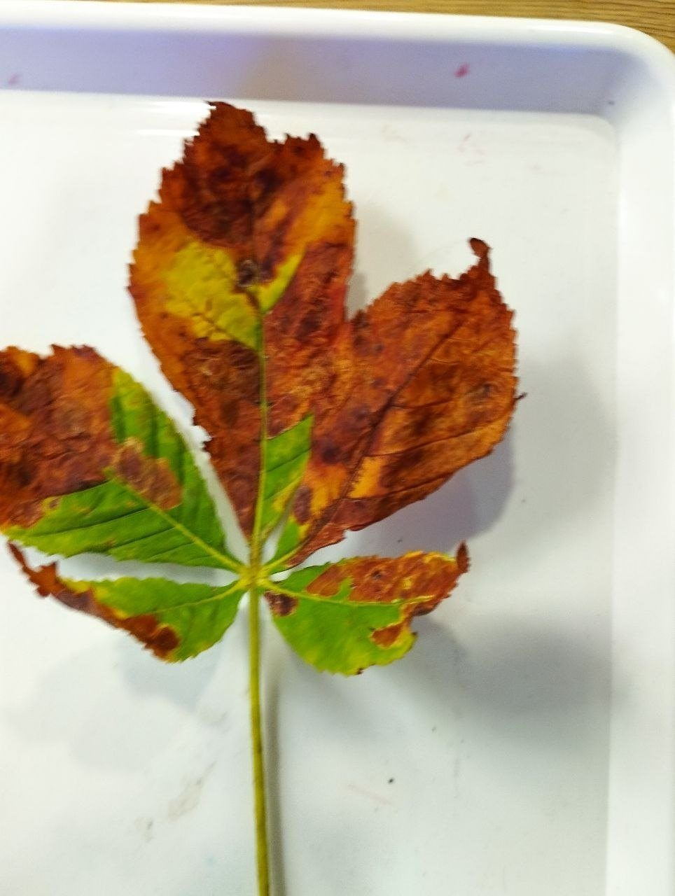
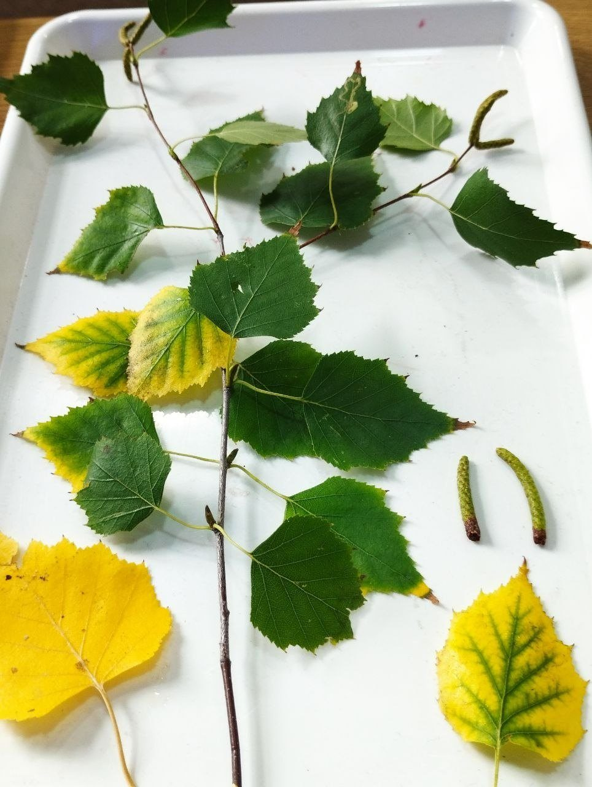
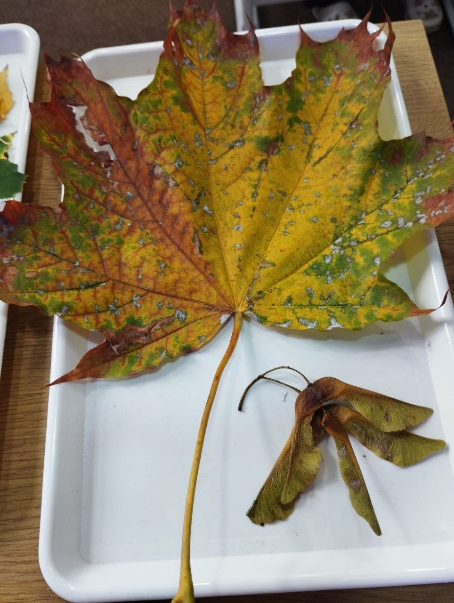
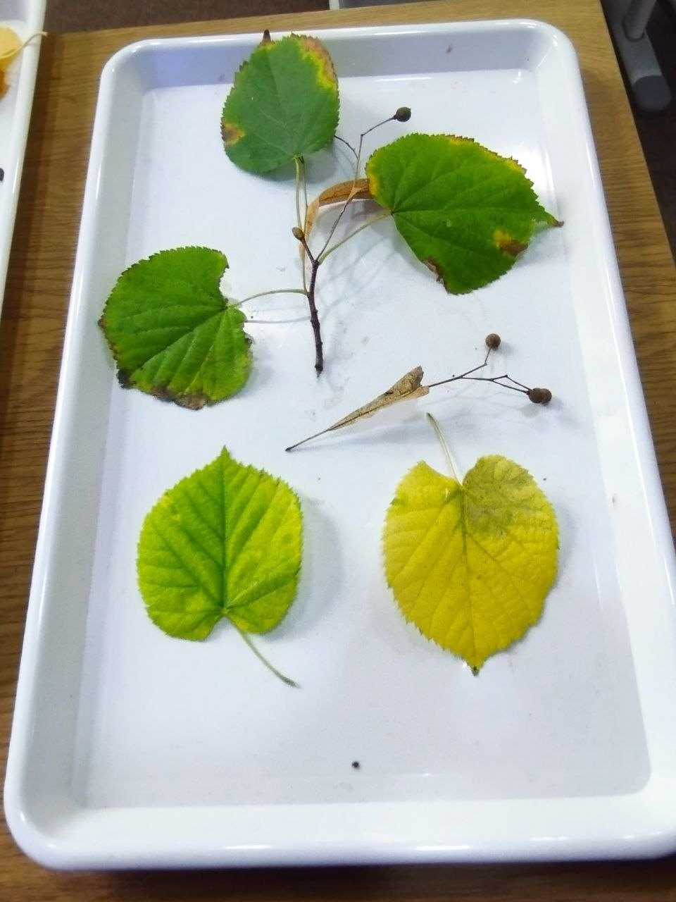
НАЗВА.
Ведучий: «Сьогодні ми проживемо разом одну осінню добу — від 06:00 ранку до 00:00 ночі — і дізнаємося, що відбувається з природою за цей час».
Головне питання конференції: «Що відбувається з природою протягом однієї осінньої доби?»
Ключовий принцип: ми не просто розповідаємо факти — ми спостерігаємо, ставимо питання, висуваємо гіпотезу, перевіряємо, збираємо докази і робимо висновок.
Фото: дослідження листя, зроблені дітьми (каштан, береза, клен, липа).
Наша осіння доба
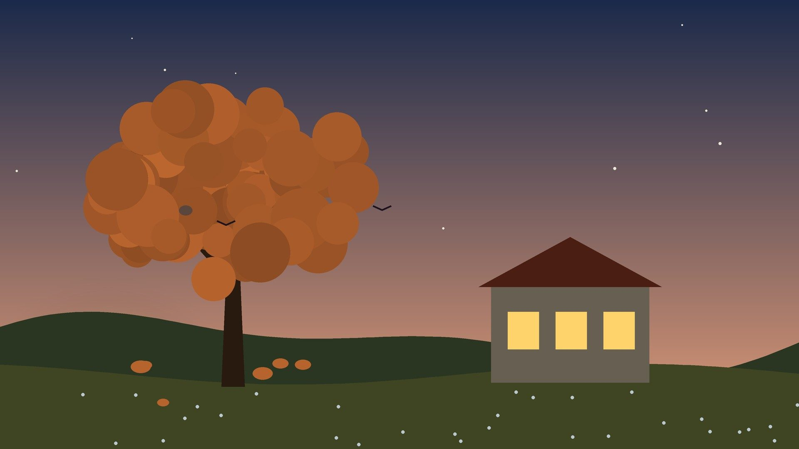
06:00ранок
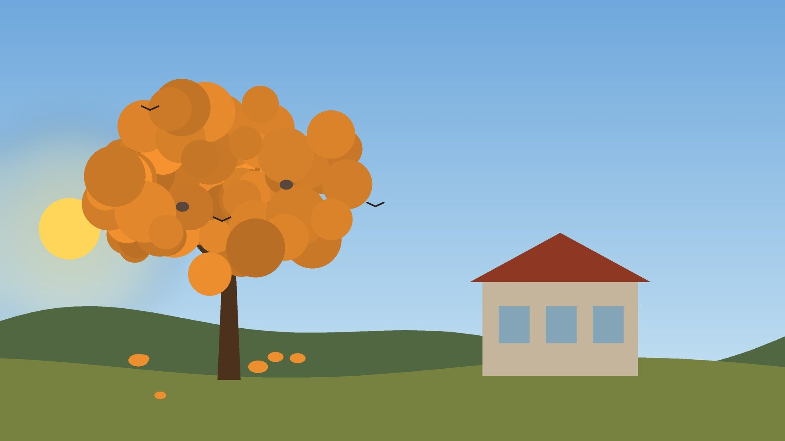
09:00світло
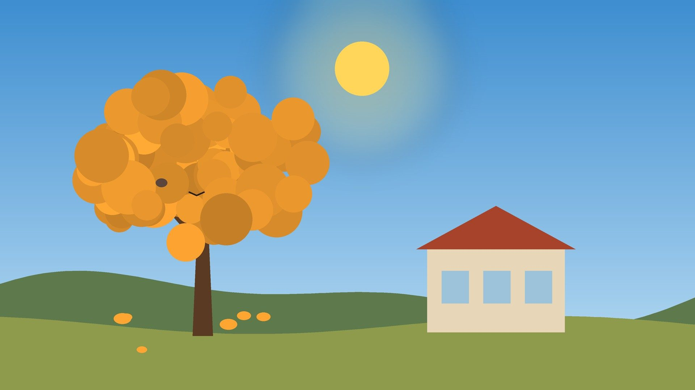
12:00полудень
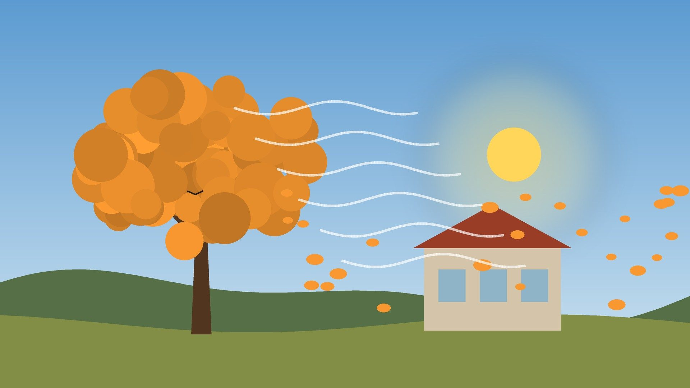
15:00вітер
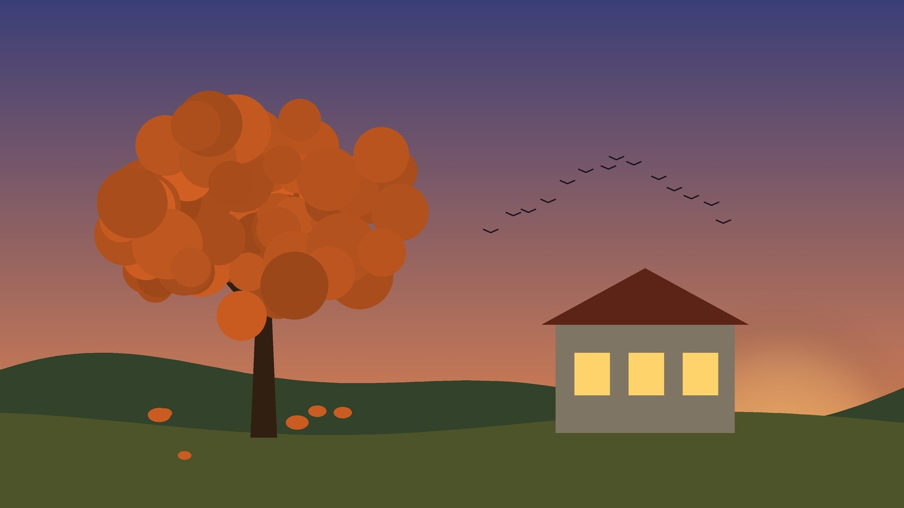
18:00сутінки
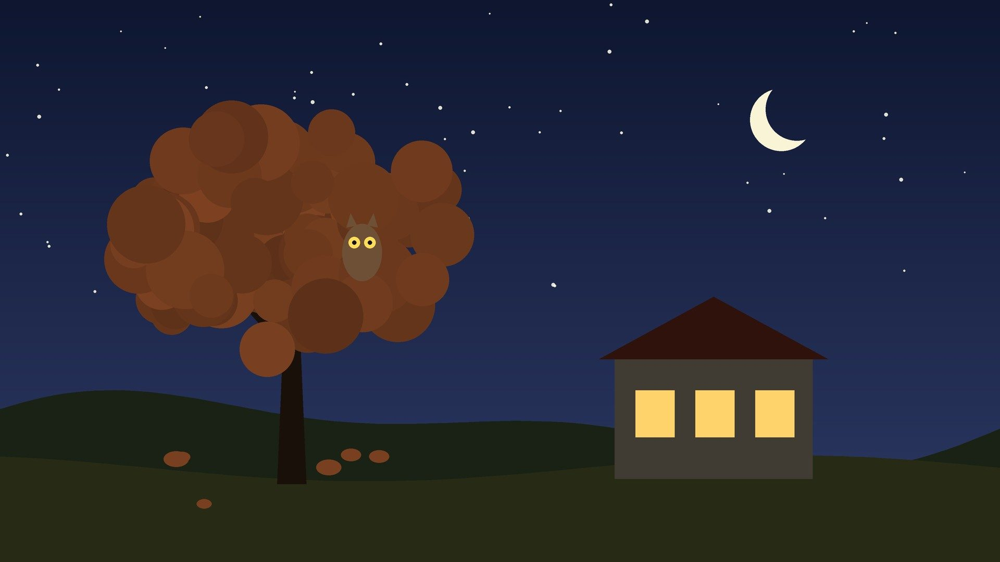
21:00ніч
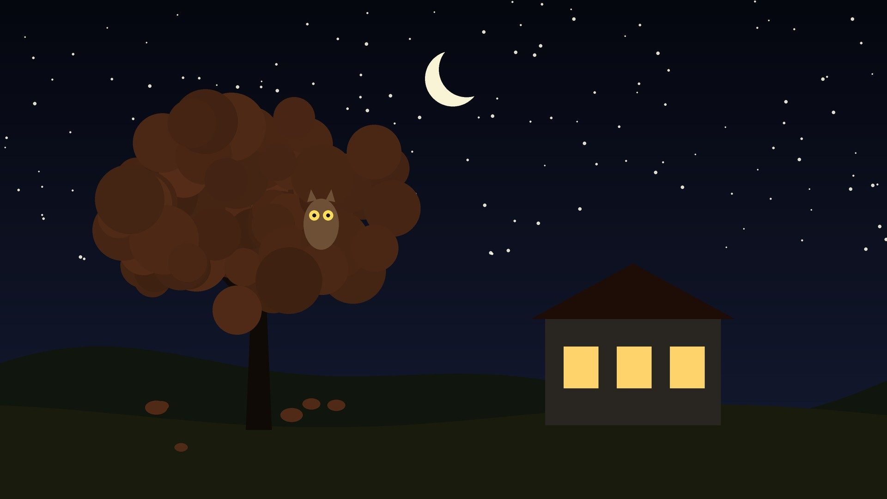
00:00північ
Світло змінюється
Температура змінюється
Тварини поводяться інакше
ОДНА ДОБА.
Покажіть дітям «маршрут» нашої доби: ранок → день → вечір → ніч.
Це одне й те саме місце (дерево, шкільний будиночок), намальоване в різний час. Попросіть порівняти: «Що змінюється? Небо? Сонце? Птахи? Вікна?»
Ці малюнки — навчальна ілюстрація, не фотографії.
Внизу три речі, за якими стежимо цілий день: світло, температура, поведінка живих істот.
Важливо: тут ми говоримо про зміни ПРОТЯГОМ ДОБИ (за години). Зміни за тижні (осінь) — окремо, на пізнішому слайді.
Як працює вчений
Помічаю
Запитую
Припускаю
Перевіряю
Роблю висновок
«У науці недостатньо сказати „я бачу“. Потрібно перевірити».
ЯК ПРАЦЮЄ ВЧЕНИЙ.
Підготовка (2 тижні): «ПОМІЧАЙ» (дні 1–5) → «ЗАПИТУЙ» (дні 6–7) → «ПЕРЕВІРЯЙ» (день 8).
Кроки: помічаю → ставлю питання → висуваю гіпотезу (припущення) → перевіряю дослідом → порівнюю очікування з результатом → роблю висновок.
Ключова фраза ведучого: «У науці недостатньо сказати „я бачу“. Потрібно перевірити».
06:00
Світає
Ще темно, небо світлішає
Сонце сходить пізніше: 22.10 в Одесі — о 07:24
Прохолодно, на траві роса
Птахи прокидаються і подають голос
Схід Сонця: Open-Meteo, Одеса, 22.10.2026
06:00
09:00
12:00
15:00
18:00
21:00
00:00
06:00 — РАНОК.
На екрані — світанок над нашим деревом. Покажіть: небо світлішає з краю, вікна ще світяться, на траві роса.
ЗВУК: кнопка «Ранкові птахи» — пісня вільшанки (малинівки), ≈30 с. Слухати 15–20 с, потім клікнути ще раз, щоб зупинити.
Питання: «Хто прокинувся першим? Що ви чуєте?» (Вільшанки співають і восени, часто ще в сутінках.)
Факт: 22 жовтня в Одесі Сонце сходить о 07:24 — тобто о 06:00 ще темно, тільки світає (дані Open-Meteo).
Звук: Wikimedia Commons / xeno-canto XC178578, автор Dan Stowell, CC BY-SA 4.0. Запис зроблено не в Україні — це той самий вид птаха.
Дослід «Чи сухий листок?»
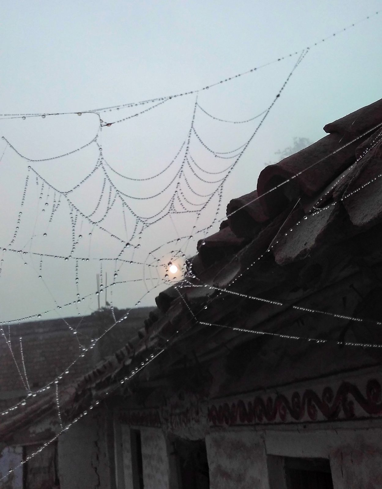
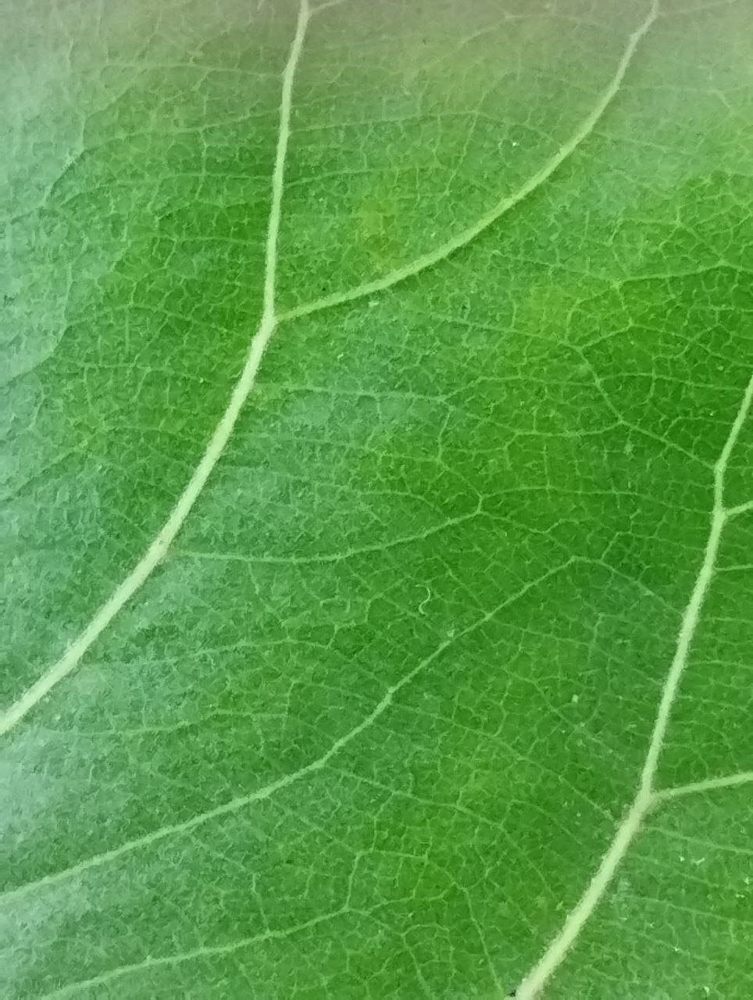
На дотик сухий
Перевіряємо під камерою
Висновок?
Ліворуч: «Morning dew drops», Kumar Rohan, CC BY-SA 4.0 (Wikimedia Commons). Праворуч: фото дітей.
06:00 — ДОСЛІДЖУЄМО ЛИСТОК.
Виходить дитина з листком.
Дитина: «О шостій ранку цей листок виглядає зовсім не так, як удень».
Листок кладемо під камеру — на екрані він великий. Діти розглядають краплі, прожилки, поверхню.
Експеримент «Чи сухий листок?»
Дитина: «На дотик він сухий. Але ми вирішили перевірити». Команда проводить простий дослід із вологою (наприклад, прикласти серветку / подивитися під камерою).
Ключова фраза ведучого: «У науці недостатньо сказати „я бачу“. Потрібно перевірити».
Ліве фото — приклад ранкової роси (Wikimedia Commons), праве — листок із дитячого дослідження.
09:00
Чому листок зелений?
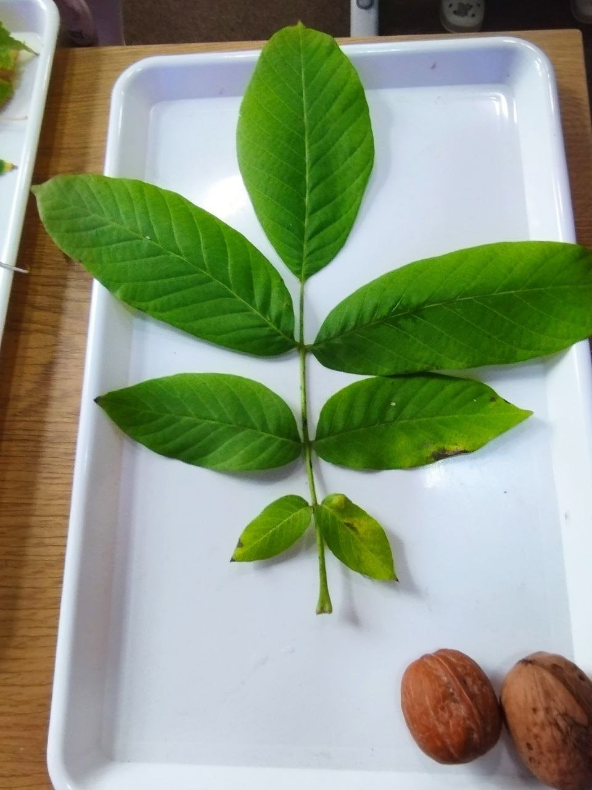
06:00
09:00
12:00
15:00
18:00
21:00
00:00
09:00 — СВІТЛО.
Проекція стає яскравішою. Сонце вже піднялося, стало світліше й тепліше (зазвичай).
Питання до залу: «Чому листок зелений?»
Нехай діти висловлять припущення — не підказуйте.
На фото — листок волоського горіха з дитячого дослідження.
Помилка вченого
«Листок зелений, бо в ньому тільки зелений пігмент»
А ви впевнені?
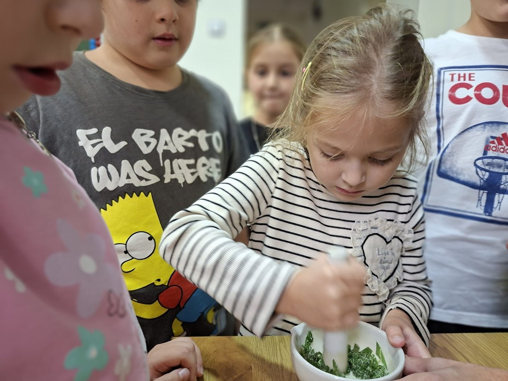
ПОМИЛКА ВЧЕНОГО (навмисна).
Одна дитина спеціально каже: «Ми думали, що листок зелений, тому що він містить тільки зелений пігмент».
Ведучий: «А ви впевнені?» — пауза, нехай зал подумає.
Далі — відео нашого досліду з пігментами.
Фото: дитина подрібнює листя в ступці (наше дослідження).
Лабораторія кольору: наш дослід
ВІДЕО «ЛАБОРАТОРІЯ КОЛЬОРУ» (1 хв 46 с, зі звуком — говорить учитель).
ЗАПУСК: клацніть по відео (або наведіть курсор і натисніть ▶ на панелі). ЗУПИНКА: клік по відео ще раз.
Зміст: діти подрібнюють зелене й жовте листя, заливають розчинником, фільтрують — отримують кольорові розчини.
Під час відео звук інших доріжок не вмикати.
Після відео — наступний слайд із результатом.
Не один колір, а ціла команда!
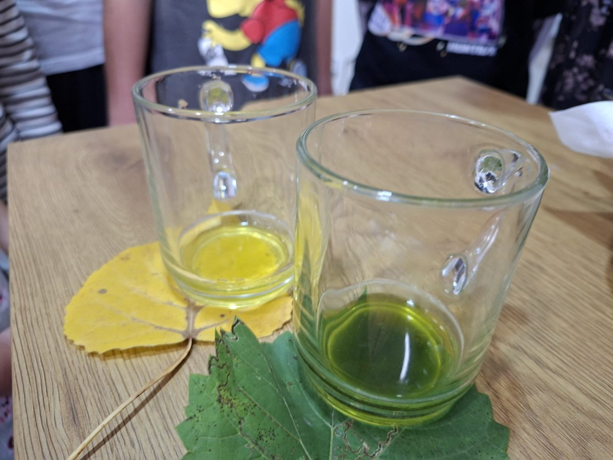
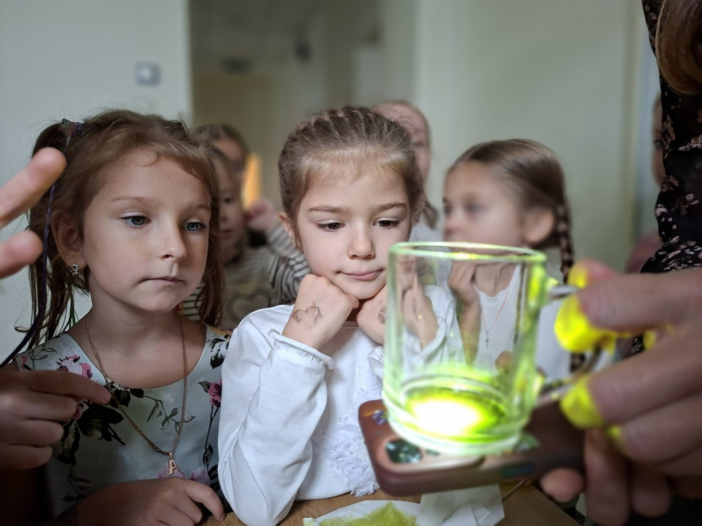
зелений
жовтий
оранжевий
червоний
«Ми думали — один колір. А там ціла команда пігментів!»
РЕЗУЛЬТАТ: КОМАНДА ПІГМЕНТІВ.
Дитина: «Ми думали, що листок зелений через один колір. Але виявилося, що там ціла команда пігментів».
Для ведучого (простими словами):
• зелений — хлорофіл, з його допомогою листок «ловить» сонячне світло;
• жовтий і оранжевий — каротиноїди, вони є в листку й улітку, але їх «ховає» зелений;
• червоний — антоціани, у деяких дерев з’являються восени.
На фото (наш дослід): жовтий і зелений розчини з різного листя; розчин світиться в променях ліхтарика.
Якщо робили хроматографію на папері — покажіть смужку наживо під камерою.
12:00
Ми зменшилися!
Сонце — найвище за день. Але восени воно не піднімається так високо, як улітку.
06:00
09:00
12:00
15:00
18:00
21:00
00:00
12:00 — МИ ЗМЕНШИЛИСЯ.
Полудень: Сонце найвище за день, тіні найкоротші. Восени Сонце опівдні нижче, ніж улітку, тому тіні довші.
Зараз ми «зменшимося» і зазирнемо всередину листка.
ZOOM IN: заглядаємо в листок
листок
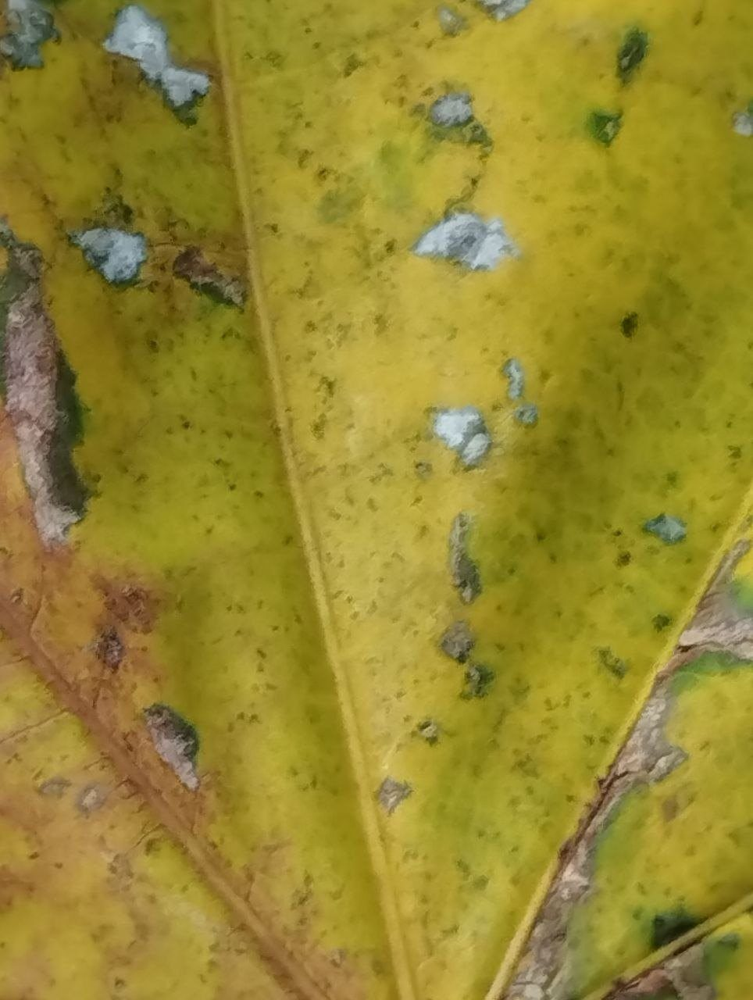
ближче
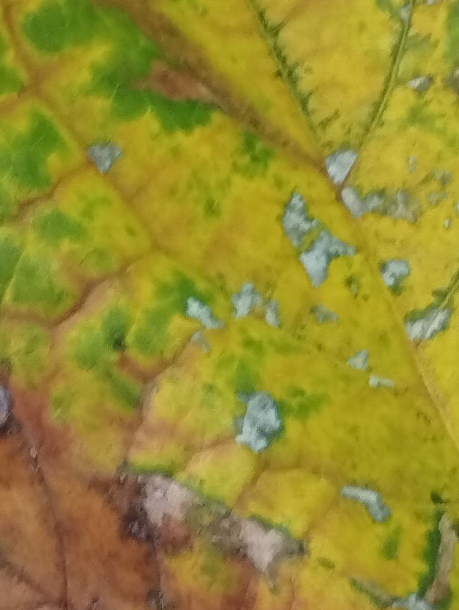
ще ближче
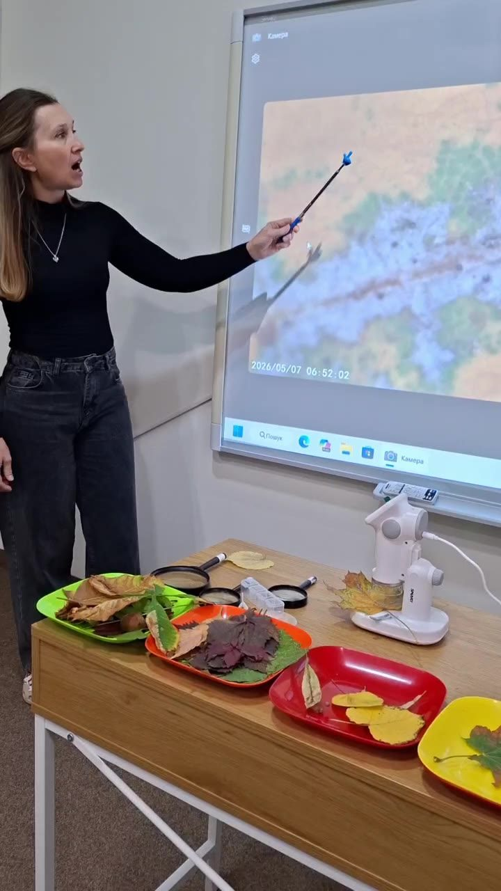
мікроскоп
ZOOM IN.
Глядач ніби провалюється всередину листка: листок клена → ближче → ще ближче → під мікроскопом.
Якщо є мікроскоп із камерою — виводьте зображення наживо. Якщо ні — наступний слайд з відео.
Досліджуємо: поверхню листка, прожилки, видимі структури; також ґрунт і насіння.
(Фото — наші: листок клена гостролистого та кадр з відео мікроскопа.)
«Ми дивилися на листок. А тепер листок дивиться на нас»
Прожилки, поверхня, клітинки
ВІДЕО «ЛИСТОК ПІД МІКРОСКОПОМ» (1 хв 26 с, вертикальне, зі звуком — пояснює учителька).
ЗАПУСК: клік по відео; ЗУПИНКА: ще один клік.
Дитина: «Ми дивилися на листок. А тепер листок дивиться на нас».
Що шукаємо: прожилки (як «дороги» для води), поверхню, дрібні клітинки.
Лабораторія листка: чиї це листки?
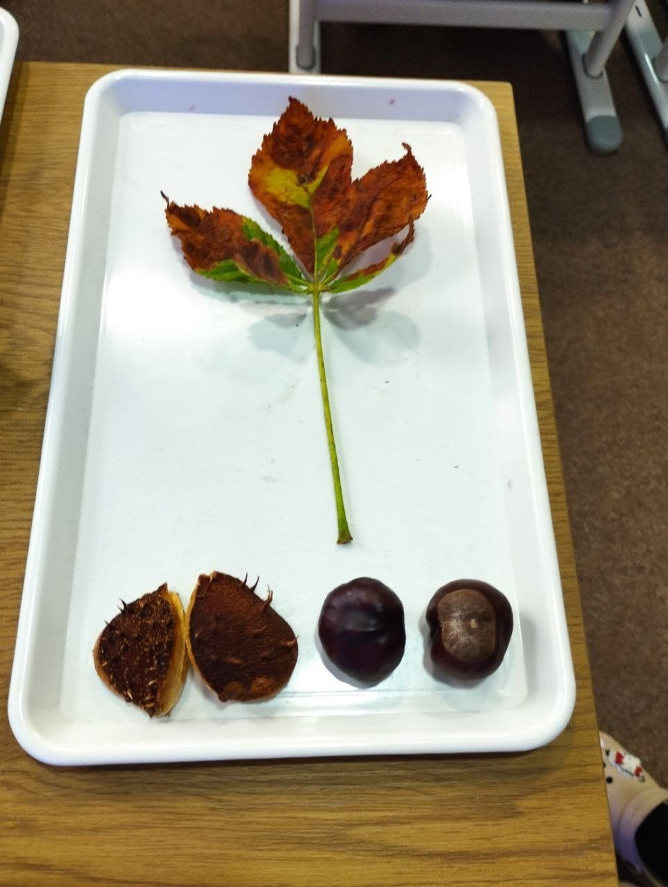
Каштан
Горіх
Береза
Клен
КОЛАЖ 1. Зразки з нашого дослідження: листок + плоди дерева на одному лотку.
• Каштан кінський — листок «долонькою» з 5–7 листочків, поруч каштани та колюча шкаралупа.
• Горіх волоський — складний листок, поруч горіхи.
• Береза — трикутні листки із зубчиками, поруч сережки.
• Клен — лапчастий листок, поруч крилатки.
Спершу запитайте: «Чий це листок? Як ви здогадалися?» Порівнюємо форму, колір, край, прожилки.
Лабораторія листка: порівнюємо
Липа
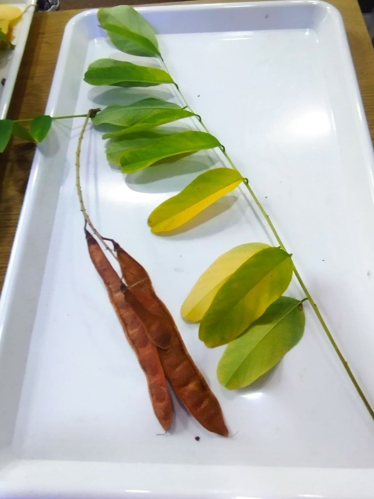
Робінія
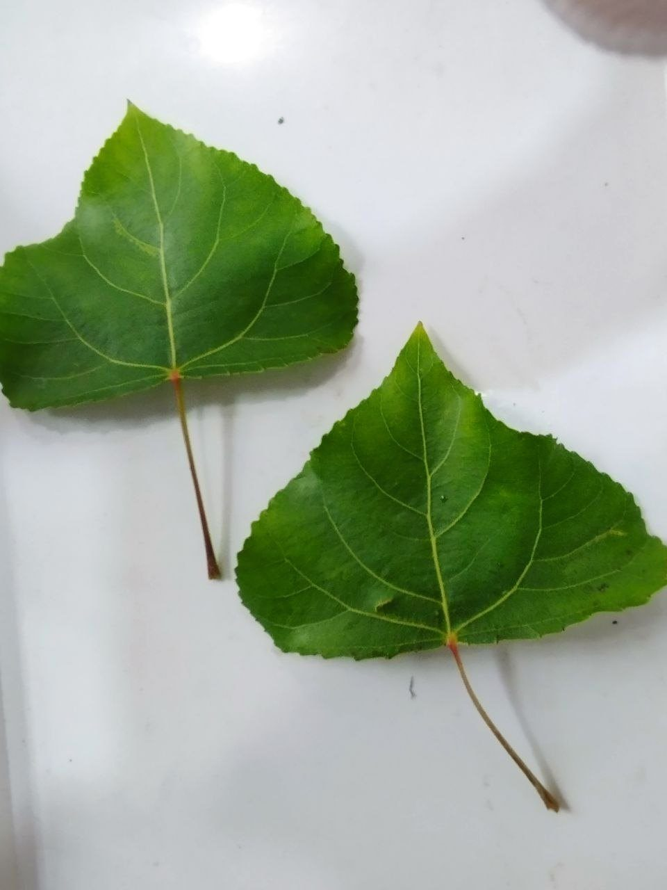
Тополя
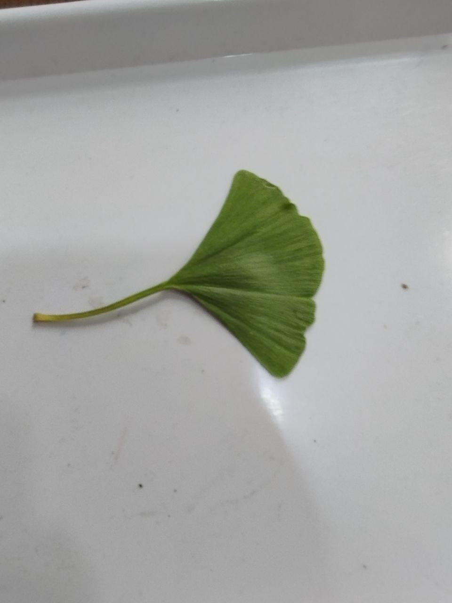
Гінкго
КОЛАЖ 2.
• Липа — листок-«сердечко», поруч горішки з крильцем-приквітком.
• Робінія (у народі «біла акація») — складний листок із круглих листочків, поруч стручки.
• Тополя — трикутний листок на довгому черешку.
• Гінкго — листок-«віяло», дуже давня рослина.
Питання: «Який листок найбільше схожий на серце? На віяло? На долоньку?»
Подивись зблизька: краї та прожилки
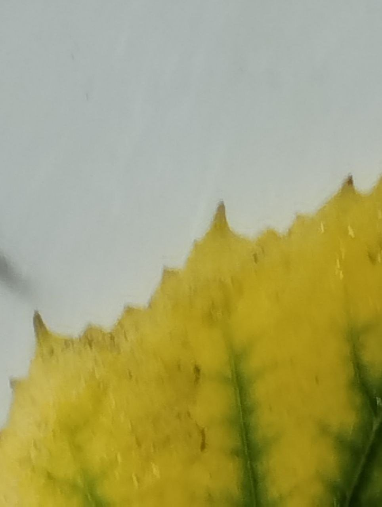
Береза: зубчики
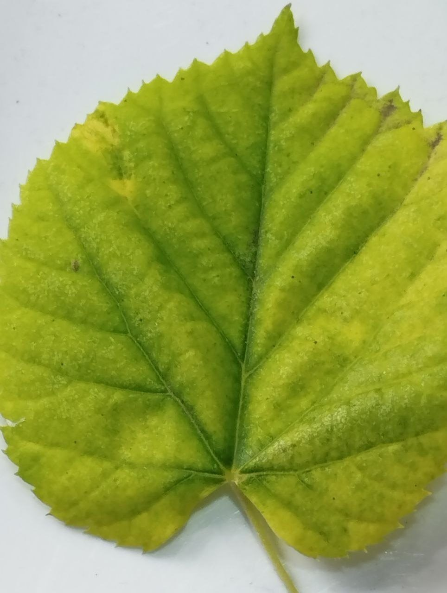
Липа: сіточка прожилок
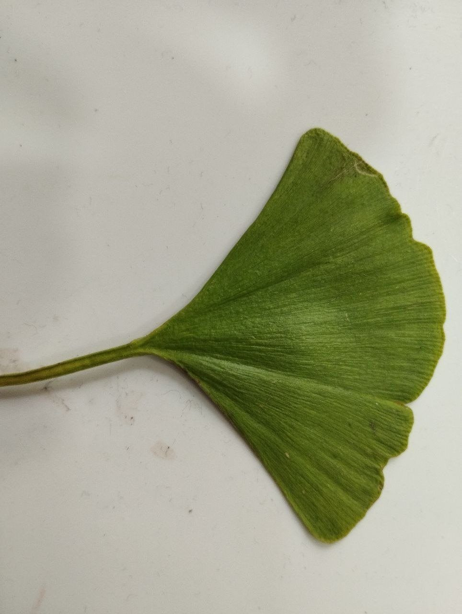
Гінкго: прожилки віялом
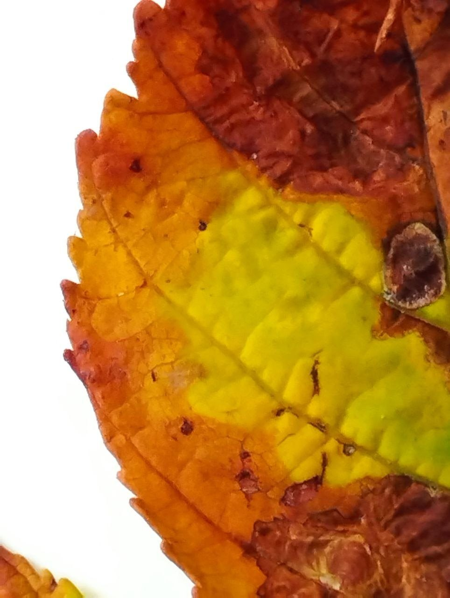
Каштан: жовтіє з країв
МАКРОФОТО (наші).
Порівнюємо: край листка (з зубчиками чи гладкий), прожилки (сіточка, віяло, «ялинка»), колір.
Береза — дрібні зубчики по краю. Липа — сіточка прожилок. Гінкго — прожилки розходяться віялом. Каштан — жовтіє й буріє нерівно.
Питання: «Чим відрізняються краї?», «На що схожі прожилки?»
Насіння та плоди: як вони подорожують?
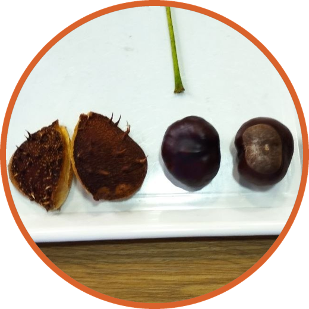
Каштани
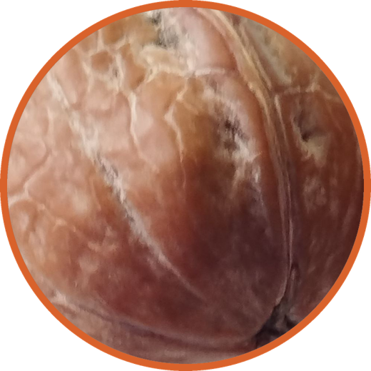
Горіх
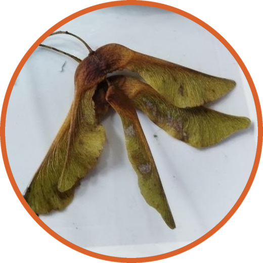
Крилатки клена
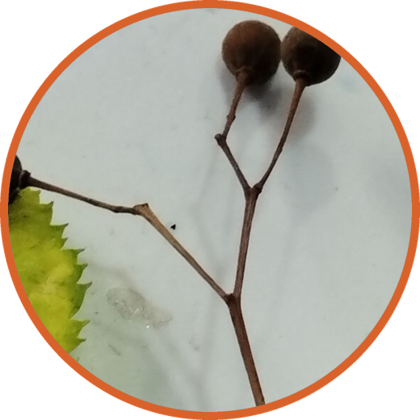
Горішки липи
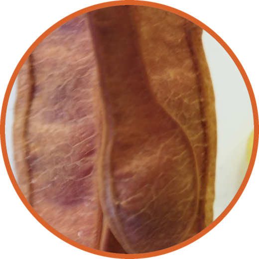
Стручок робінії
Падає? Летить за вітром? Хтось переносить?
НАСІННЯ ТА ПЛОДИ (наші фото).
Каштани важкі — падають під дерево. Горіхи часто переносять і ховають тварини (наприклад, сойки, білки). Крилатки клена кружляють на вітрі. Горішки липи мають крильце-приквіток — теж летять за вітром. Робінія — насіння в стручках.
Питання: «Як ви думаєте, яке насіння полетить найдалі?» Можна підкинути крилатку в залі.
Один листок — шість відкриттів
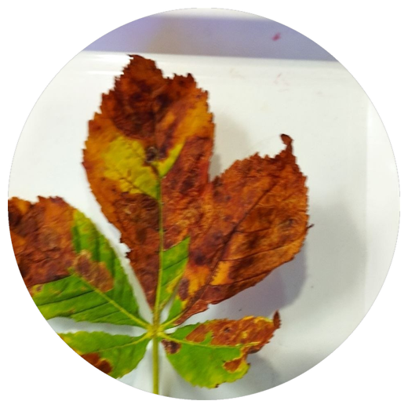
світло
вода
пігменти
повітря
ґрунт
коріння
ПІДСУМОК ЛАБОРАТОРІЇ ЛИСТКА: «Один листок — шість відкриттів».
За одним звичайним листком стоять: світло, вода, пігменти, повітря, ґрунт і коріння.
Команда показує зразки ґрунту (сухий, вологий, з різних місць) під лупою/мікроскопом і розповідає, навіщо рослині коріння (тримає рослину, вбирає воду).
Прогноз перед дослідом
30–60 секунд
Як ти думаєш, що станеться?
Скажи свій прогноз
Подивимось дослід
Порівняємо: збіглося?
«ПРОГНОЗ ПЕРЕД ДОСЛІДОМ» — 30–60 секунд.
Перед кожним дослідом діти швидко кажуть, що, на їхню думку, станеться. Потім перевіряємо і порівнюємо очікування з результатом.
Готових відповідей не даємо.
15:00
Чи можна побачити вітер?
06:00
09:00
12:00
15:00
18:00
21:00
00:00
15:00 — ВІТЕР.
ЗВУК: кнопка «Вітер» (вітер у лісі, ≈40 с, плавно наростає). Дати послухати 15–20 с, потім клік — стоп.
Питання: «Чи можна побачити вітер?»
Діти демонструють безпечну візуалізацію руху повітря (стрічки, пір’їнка, листок).
Завдання залу: «ПОКАЖІТЬ БЕЗ СЛІВ, ЯК РУХАЄТЬСЯ ВІТЕР».
Звук: «Wind in forest (Gravity Sound)», CC BY 4.0, Wikimedia Commons.
Повітря невидиме, але воно є
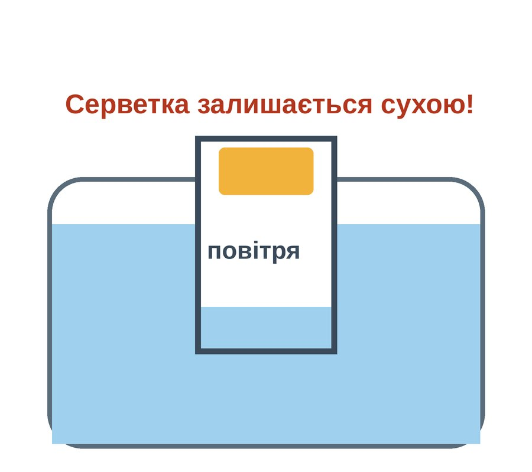
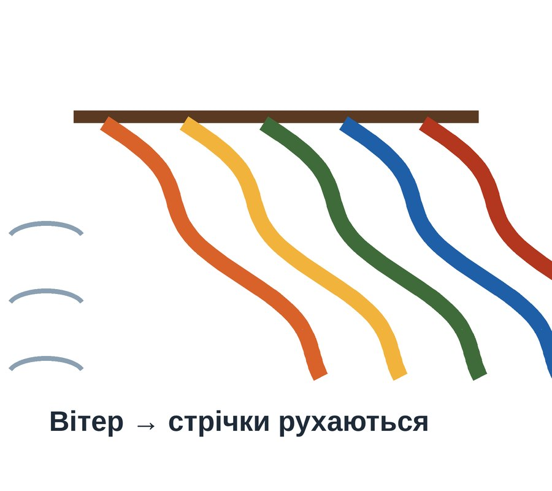
«Ми не бачимо повітря. Але бачимо його дію»
ЛАБОРАТОРІЯ ПОВІТРЯ.
Дослід 1 — повітря займає місце: перевернуту склянку з серветкою на дні опускаємо у воду рівно, дном догори — серветка залишається сухою, бо в склянці повітря.
Дослід 2 — повітря рухається: паперові стрічки / легкі предмети + вітер (або віяло) — стрічки рухаються.
Пояснити: повітря буває тепле й холодне; тепле піднімається, холодне опускається — так виникає вітер.
Ключова фраза: «Ми не бачимо повітря. Але можемо побачити його дію».
Малюнки — навчальні схеми.
15:17
TEMPERATURE DROP
Стоп! Температура різко впала.
Що станеться з природою?
30 секунд на прогноз
15:17 — НЕСПОДІВАНИЙ ПОВОРОТ (ігрова ситуація, не реальна подія).
Перед цим слайдом зупиніть звук вітру — «звук обривається».
Ведучий: «Стоп. У нас змінилися умови. Температура різко впала. Як це вплине на те, що ми щойно досліджували?»
«Що станеться з природою, якщо температура зміниться?»
Дітям — 30 секунд на прогноз, потім перевіряють (напр., холодна склянка → конденсат; листок на холоді).
Важливо не давати готову відповідь, а змусити мислити.
Подорож краплі: звідки взялася вода?
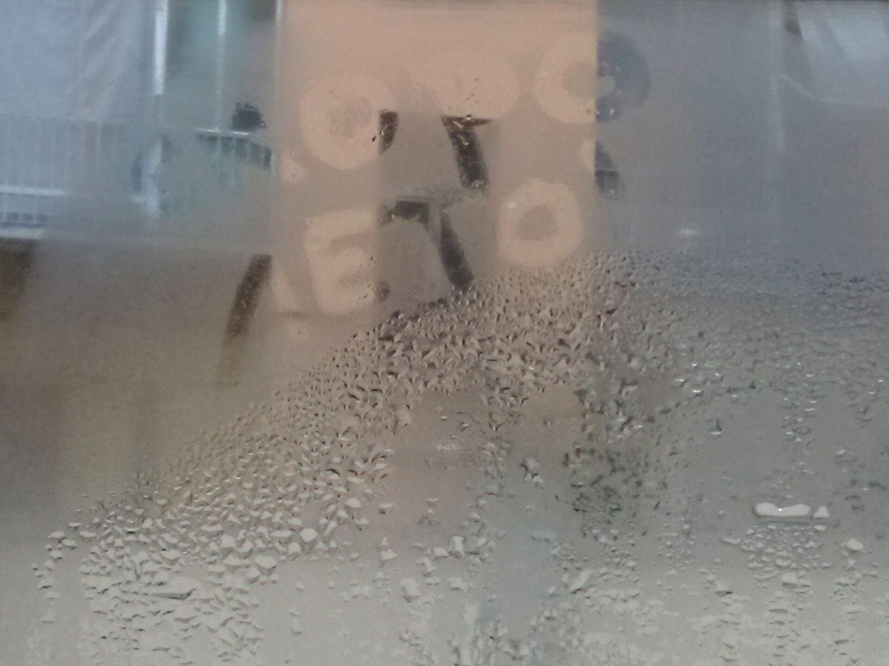
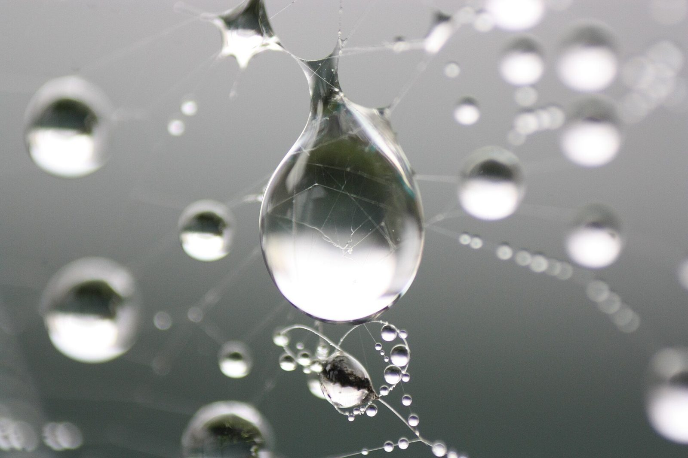
Холодне скло → краплі
Чому?
Фото: «Condensate.jpg», Mia Primavera, CC0; «Big Water Droplet on spider web», Simone Bissi, CC BY-SA 4.0 (Wikimedia Commons)
ЛАБОРАТОРІЯ ВОДИ: «Подорож краплі».
Дослід наживо: налийте в склянку/пляшку холодну воду (або охолодіть її) і спостерігайте, як ЗЗОВНІ з’являються краплі.
Питання: «Звідки взялася ця вода?» Нехай діти самі дійдуть: у повітрі є невидима водяна пара; на холодній поверхні вона перетворюється на краплі — це конденсація. Так само утворюється роса вранці.
Покладіть краплю води на прозору поверхню і покажіть її під макрокамерою — «крапля як цілий світ».
Фото — приклади з Wikimedia Commons (не наші досліди).
Кругообіг води
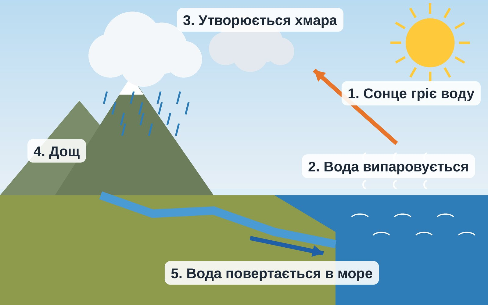
Як ще назвати дощ?
мряка
злива
дощик
грибний дощ
КРУГООБІГ ВОДИ.
1. Сонце гріє воду. 2. Вода випаровується (стає невидимою парою). 3. Пара охолоджується вгорі — утворюється хмара. 4. Йде дощ. 5. Вода по річках повертається в море.
ЗВУК: кнопка «Дощ» — дощ по листю, ≈45 с. Слухати 15–20 с, далі клік — стоп. Питання: «Який це дощ — злива чи мряка?»
Гра: «Як ще назвати дощ?» — мряка, злива, дощик, грибний дощ, дощ як із відра… (Відповіді на слайді можна закрити рукою/показати після відповідей дітей.)
Команда показує свою модель кругообігу.
Звук: «Rain on leaves (Gravity Sound)», CC BY 4.0, Wikimedia Commons.
Протягом доби: ранок → день → вечір
Зазвичай удень тепліше, ніж уранці. Але не завжди!
Температура повітря, °C, Одеса. Архівні дані Open-Meteo (модельні розрахунки), не наші спостереження.
МЕТЕОСТАНЦІЯ: ЗМІНИ ПРОТЯГОМ ДОБИ.
Дані: Open-Meteo, Одеса (46.48° пн. ш., 30.72° сх. д.), температура повітря на висоті 2 м, щогодинні значення. Це архівні модельні дані, а НЕ виміри дітей.
15 жовтня (без дощу): о 06:00 — 7,7°, найхолодніше було близько 08:00 (7,2°), найтепліше — о 15:00 (13,0°). Звичайна картина: вночі й зранку прохолодно, вдень тепліше.
18 жовтня (дощ, гроза — 22,7 мм опадів): зранку 9,2°, а найтепліше — увечері (13,8° о 21:00). Тобто вдень не завжди тепліше: погода (хмари, дощ, вітер) усе змінює.
Питання: «Коли було найхолодніше? Чому 18 жовтня все інакше?»
Якщо діти вели власні записи на ватмані (ранок/день/вечір) — покажіть їх поруч і порівняйте.
Найвища температура дня: 10–22 жовтня
Найтепліше12 жовтня: 19,7°
Найхолодніше17 жовтня: 11,5°
Коли було найтепліше? Як змінилася температура?
Одеса, 2026. Найвища температура повітря за добу, °C. Архівні дані Open-Meteo (модельні), станом на 19.10. 20–22.10 ще не настали.
ГРАФІК 10–22 ЖОВТНЯ.
Що показано: найвища температура повітря за добу (денний максимум), Одеса, 2026 рік. Один тип вимірювань для всіх днів.
Джерело: Open-Meteo (архів / модельний аналіз погоди, api.open-meteo.com), отримано 19.10.2026. Це НЕ спостереження дітей.
19.10 — день ще не завершився на момент підготовки, значення може трохи уточнитися.
20, 21 і 22 жовтня — порожні, бо ці дні ще не настали. У день конференції можна дописати їх від руки або оновити дані.
Висновок за реальними даними: 10–12 жовтня було тепло (до 19,7°), з 13 жовтня різко похолоднішало, найхолодніший день — 17 жовтня (11,5°), потім знову трохи потеплішало.
Питання: «Коли було найтепліше?», «Як змінилася температура за ці дні?»
Шкала починається з 0°, щоб не перебільшувати зміни.
Як осінь змінюється за тижні
День коротшає
22 вересня: 12 год 12 хв світла 22 жовтня: 10 год 34 хв
Листя жовтіє
Зелений пігмент руйнується — стає видно жовтий і оранжевий
Птахи відлітають
Комах і жаб стає менше — частина птахів летить у теплі краї
Тривалість дня: Open-Meteo, Одеса (схід/захід Сонця 22.09: 06:43/18:55; 22.10: 07:24/17:58).
ЗМІНИ ЗА ТИЖНІ (сезонні) — НЕ плутати зі змінами протягом доби.
Протягом доби змінюються світло, температура, активність тварин — за години.
Протягом тижнів (осінь): дні коротшають, листя змінює колір і опадає, перелітні птахи відлітають.
Дані про тривалість дня в Одесі (Open-Meteo): 22 вересня — 12 год 12 хв, 22 жовтня — 10 год 34 хв. За місяць день став коротшим більш ніж на півтори години.
Листя: восени листок перестає виробляти хлорофіл, зелений колір зникає — і стають видимими жовті та оранжеві пігменти, які були там і раніше.
Метеостудія: прогноз на 22 жовтня
ПРОГНОЗ Одеса
+15°
хмарно
Дощ: малоймовірний
Вітер: слабкий
Чи потрібна парасолька?
Як сьогодні одягнутися?
Прогноз Open-Meteo для Одеси, станом на 19.10.2026: удень до +15,6°, вночі +14,5°, ймовірність опадів 9%, вітер до 15 км/год (≈4 м/с), південно-східний. Перевірте вранці 22.10.
МЕТЕОСТУДІЯ — дитина-ведуча прогнозу.
Дитина: «Добрий день! Ви дивитеся дитячу метеостудію. Сьогодні, 22 жовтня, в Одесі…»
Це ПРОГНОЗ (що, можливо, буде), а не спостереження (що вже було) — графік на попередніх слайдах показує те, що вже було.
Джерело: Open-Meteo (api.open-meteo.com), прогноз для Одеси, отриманий 19.10.2026: максимум +15,6°C, мінімум +14,5°C, хмарно (код погоди 3 — суцільна хмарність), ймовірність опадів 9%, макс. вітер 14,6 км/год (≈4 м/с), напрямок ~120° (південно-східний).
УВАГА: прогноз на 3 дні вперед може змінитися — уранці 22.10 перевірте й за потреби виправте цифри на слайді.
Питання до залу: «Чи потрібна сьогодні парасолька?» (За цим прогнозом — найімовірніше, ні.) «Як одягнутися?» (Тепла куртка або светр.)
18:00
Сутінки
Сонце сідає: 22.10 — о 17:58
Стає темніше і прохолодніше
Птахи летять на ночівлю
06:00
09:00
12:00
15:00
18:00
21:00
00:00
18:00 — СУТІНКИ.
Проекція темнішає, на екрані — захід сонця. 22 жовтня в Одесі Сонце сідає о 17:58 (Open-Meteo), тож о 18:00 воно щойно сховалося.
Увечері часто прохолодніше, ніж удень (але не завжди — згадайте 18 жовтня).
Багато птахів збираються зграями і летять на ночівлю.
Далі — сенсорна лабораторія «Запах осені».
Чи має осінь запах?
мокра земля
яблуко
листя
хвоя
гарбуз
трава
Понюхай і проголосуй!
СЕНСОРНА ЛАБОРАТОРІЯ «ЗАПАХ ОСЕНІ».
Батькам і дітям пропонуємо понюхати (із закритими очима) зразки: мокра земля, яблуко, листя, хвоя, гарбуз, трава.
Питання: «Чи має осінь запах?» — голосування.
Після голосування діти пояснюють: запахи — це крихітні частинки речовин, що летять у повітрі (леткі речовини); ніс їх уловлює. Після дощу запах землі стає сильнішим.
Осінь на слух: що ти чуєш?
1
2
3
4
5
Заплющ очі і вгадай!
«ОСІНЬ НА СЛУХ» — гра на впізнавання (в залі темніше).
Вмикайте звуки по черзі: клік по кнопці — слухаємо 8–10 секунд — клік ще раз — стоп. Потім питаємо: «Що це було?»
1 — дощ; 2 — шелест листя; 3 — вітер; 4 — пісня синиці великої; 5 — кроки по сухому листю.
Відповіді — на наступному слайді (зображення відкриваються після відгадування).
ВАЖЛИВО: за сценарієм тут мали бути записи дітей («REAL RECORDING — OUR AUTUMN»). Таких записів немає, тому використано вільні записи з Wikimedia Commons (див. останній слайд). Якщо діти щось записали — замініть звуки.
«Кроки по листю» складено з кількох коротких записів хрускоту листя.
Звуки осені: відповіді
1дощ
2шелест листя
3вітер
4синиця
5кроки по листю
ВІДПОВІДІ: 1 — дощ, 2 — шелест листя, 3 — вітер, 4 — синиця велика (співає й восени, залишається в Україні на зиму), 5 — кроки по сухому листю.
Маленькі кнопки внизу — щоб прослухати ще раз.
Джерела звуків — на останньому слайді.
21:00
Чому одні птахи відлітають, а інші залишаються?
06:00
09:00
12:00
15:00
18:00
21:00
00:00
21:00 — НІЧ НАБЛИЖАЄТЬСЯ.
На екрані — темний «ліс» біля нашого дерева. Вийшов місяць, з’явилася сова.
Питання: «Чому деякі тварини залишаються, а інші готуються до подорожі?»
Команда «Таємне життя мігрантів» показує своє дослідження.
Хто відлітає, а хто залишається?
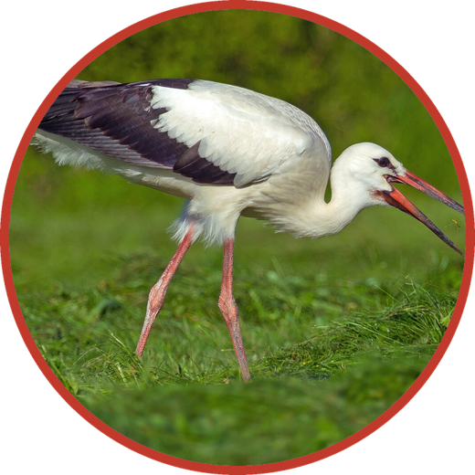
Лелека білийвідлітає
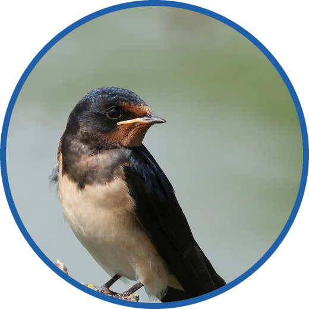
Ластівка сільськавідлітає
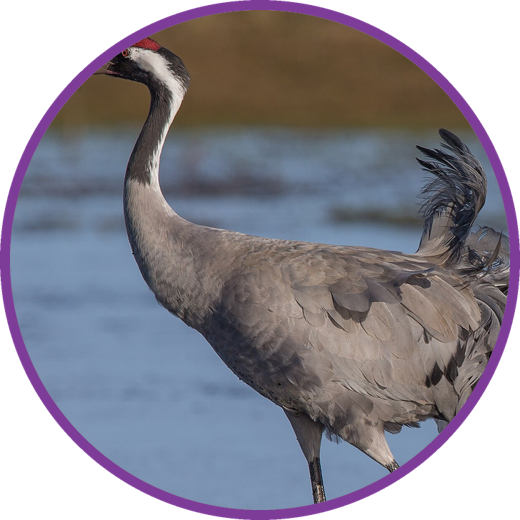
Журавель сірийвідлітає
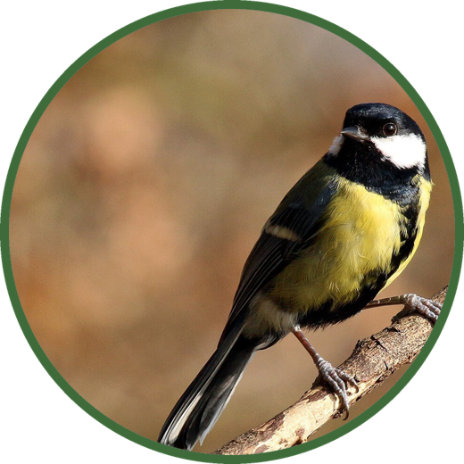
Синиця великазалишається
Фото: Andreas Trepte (CC BY-SA 2.5), Charles J. Sharp (CC BY-SA 4.0) — Wikimedia Commons. Звуки — див. останній слайд.
ХТО ВІДЛІТАЄ, А ХТО ЗАЛИШАЄТЬСЯ.
Лелека білий, ластівка сільська, журавель сірий — перелітні птахи України. Синиця велика зимує в Україні.
Чому відлітають: узимку зникає їхня їжа — ластівки ловлять комах у повітрі, лелеки їдять жаб, комах, дрібних тварин. Синиця може знайти насіння, ховану їжу, прилітає до годівниць.
ЗВУКИ (кнопки під птахами, ≈15–25 с, після 10 с можна зупинити):
• лелека майже не кричить — він клекоче дзьобом (чути «тріск»);
• ластівка — щебет;
• журавель — гучне «курли»;
• синиця — «ці-фі, ці-фі».
Фото: Wikimedia Commons (автори на останньому слайді).
Лелека: в обхід моря
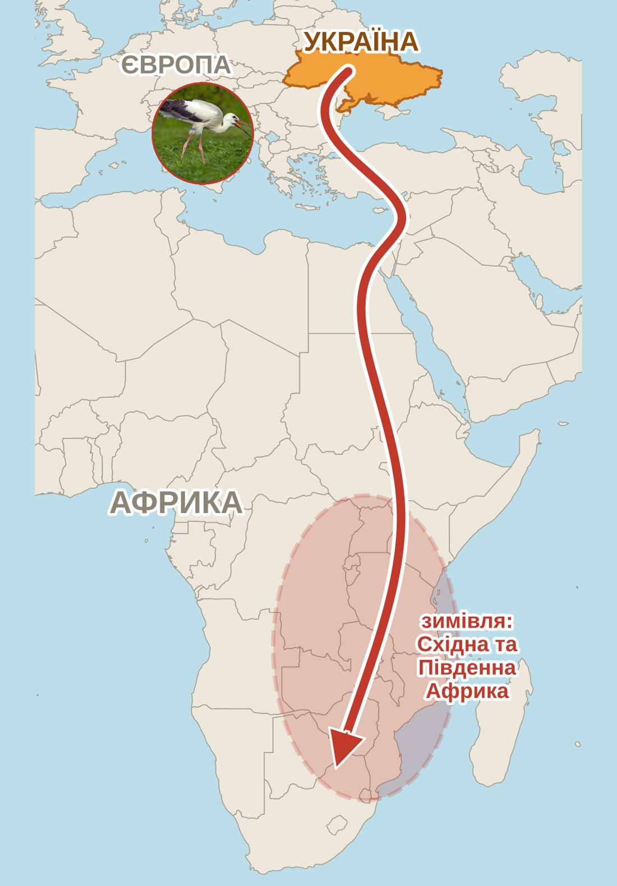
Летить над сушею, обминаючи море
Через Туреччину, Ізраїль, уздовж річки Ніл
Зимує у Східній та Південній Африці
Карта-схема: показано загальний напрямок, а не точний шлях кожного птаха.
КАРТА: ЛЕЛЕКА БІЛИЙ.
Лелеки з України летять так званим східним шляхом: над сушею, обминаючи широке море — через протоку Босфор (Туреччина), уздовж узбережжя Близького Сходу (Ізраїль), далі вздовж долини Нілу на південь. Зимують у саванах Східної та Південної Африки.
Чому в обхід моря: лелека ширяє на теплих потоках повітря, які утворюються над землею, а над морем їх майже немає.
Маршрут схематичний.
Джерело: Wikipedia, «White stork» (розділ Migration) — https://en.wikipedia.org/wiki/White_stork
Активність: діти натягують нитку від України до місця зимівлі на великій карті на підлозі і проходять маршрут «лелеки».
Ластівка: аж на південь Африки
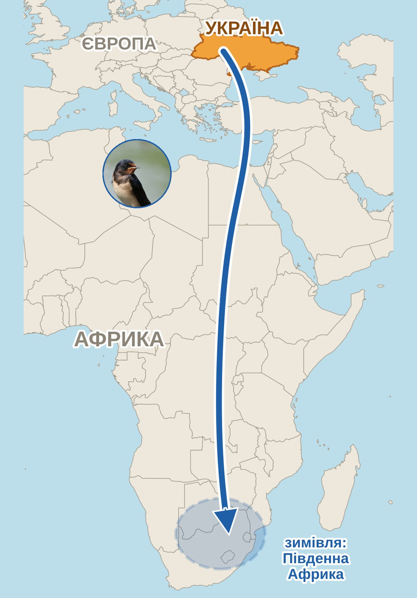
Летить через Середземне море і пустелю Сахару
Один із найдовших шляхів
Зимує на півдні Африки
Карта-схема: показано загальний напрямок, а не точний шлях кожного птаха.
КАРТА: ЛАСТІВКА СІЛЬСЬКА.
Ластівки зі Східної Європи (до неї належить і Україна) зимують переважно на півдні Африки — дослідники за даними кільцювання оцінюють, що практично всі вони залишаються на зиму саме там.
Ластівка летить широким фронтом, долаючи море і пустелю; на схемі показано загальний напрямок.
Джерело: Underhill L.G., Remisiewicz M. (2025) Birds 6(3):48, https://www.mdpi.com/2673-6004/6/3/48 (посилання на дані кільцювання).
Маршрут схематичний.
Журавель: через Крим і Туреччину
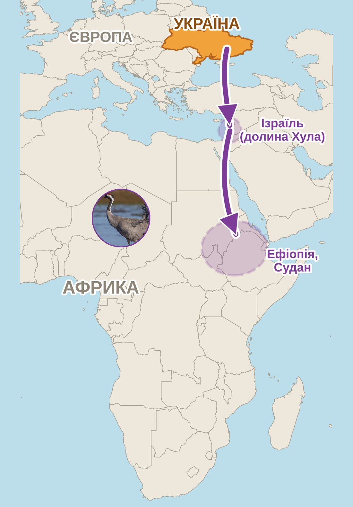
Летить зграями-«ключами» на південь
Зупиняється в Ізраїлі (долина Хула)
Зимує в Ефіопії та Судані, частина — в Ізраїлі й Туреччині
Карта-схема: показано загальний напрямок, а не точний шлях кожного птаха.
КАРТА: ЖУРАВЕЛЬ СІРИЙ.
Над Україною журавлі летять двома великими потоками переважно на південь, частина — через Сиваш і Крим (Гріщенко В.Н., «Беркут», 2007).
Журавлі зі Східної Європи зимують переважно в долинах річок Судану та Ефіопії, менше — у Туреччині, Ізраїлі, Іраку (Wikipedia «Common crane»). Долина Хула в Ізраїлі — відома зупинка і місце зимівлі.
Джерела: https://en.wikipedia.org/wiki/Common_crane ; https://aetos.kiev.ua/berkut/berkut16-2/162-17.htm
Маршрут схематичний.
Не всі летять в одне місце!
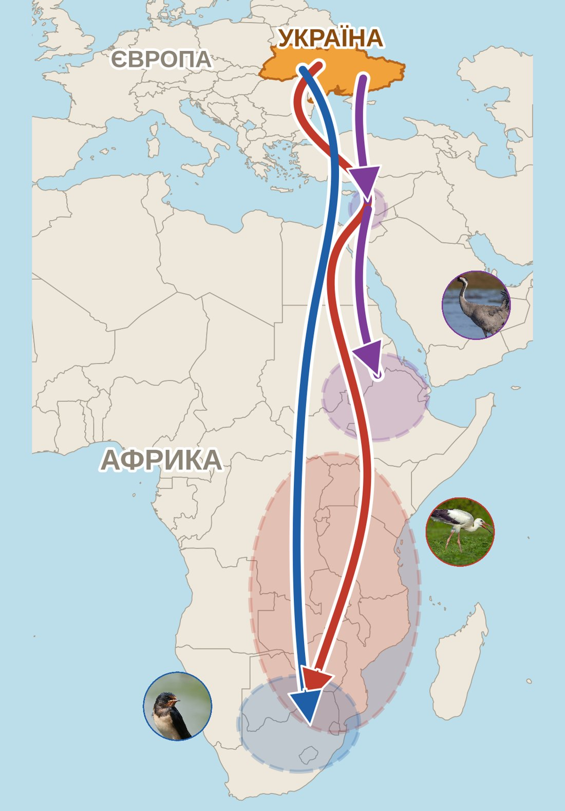
ЛелекаСхідна і Південна Африка
ЛастівкаПівденна Африка
ЖуравельЕфіопія, Судан, Ізраїль
Карта-схема
ПОРІВНЯННЯ МАРШРУТІВ.
Усі троє вилітають з України, але зимують у РІЗНИХ місцях і летять різними шляхами.
Питання: «Хто летить найдалі?» (ластівка і лелека — аж на південь Африки), «Хто зимує найближче?» (частина журавлів — в Ізраїлі та Туреччині).
Карта-схема; джерела — в нотатках до попередніх трьох слайдів.
Як птах знає, куди летіти?
Ніч. Немає карти. Немає дороги. Немає GPS.
Сонце
Зірки
Річки, гори, береги
Запахи
Магнітне поле Землі
«ЯК ВІН ЗНАЄ, КУДИ ЛЕТІТИ?»
Ведучий: «Уявіть, що ви летите вночі. Карти немає. Дороги немає. GPS немає. Як знайти напрямок?»
Діти отримують компас, магніт, карту і «невідому точку». Пробують визначити напрямок за компасом.
Пояснення: птахи орієнтуються за Сонцем, зірками, ландшафтом (річки, гори, береги морів), у деяких — за запахами; деякі тварини здатні відчувати магнітне поле Землі — як вбудований компас.
Пташиний GPS
Птах
Сонце, зірки, магнітне поле
Людина
Карта, компас, GPS
Гра: доведи птаха до зимівлі!
Птах
Сонце
Магнітне поле
ПТАХ І ЛЮДИНА. «ПТАШИНИЙ GPS».
Порівнюємо: птах → природні орієнтири (Сонце, зірки, ландшафт) і магнітне поле; людина → карта, компас, GPS.
Питання: «Якби ви втратили GPS, як би знайшли дорогу додому?»
ГРА: на підлозі велика сітка/карта. Одна дитина — «птах», інша — «Сонце», третя — «магнітне поле». «Сонце» і «магнітне поле» підказують напрямок (жестами або словами «південь», «схід»), а «птах» має дійти до потрібної точки (місця зимівлі).
Це жива демонстрація навігації, а не доповідь.
00:00
Коли ми не бачимо…
Сова полює вночі. Природа не спить!
06:00
09:00
12:00
15:00
18:00
21:00
00:00
00:00 — КОЛИ МИ НЕ БАЧИМО.
У залі — повна темрява. На екрані — північ.
ЗВУК: кнопка «Сова» — голос сови сірої (неяситі сірої), ≈30 с. Слухати 15 с, потім стоп. Сови сірі активні вночі й часто кричать саме восени.
Питання: «Хто не спить уночі?»
Звук: xeno-canto XC494801, Alvaro Ortiz Troncoso, CC BY-SA 4.0 (Wikimedia Commons).
Нічний мікросвіт
крапля
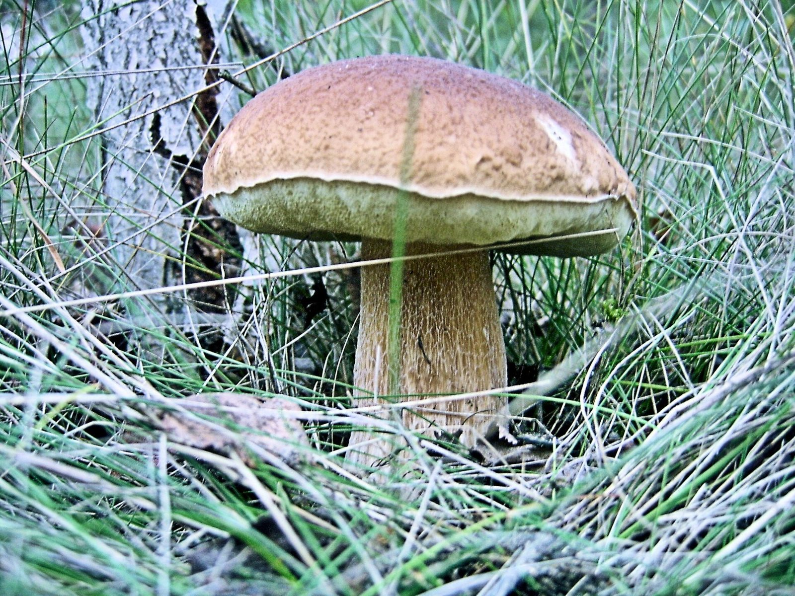
гриб
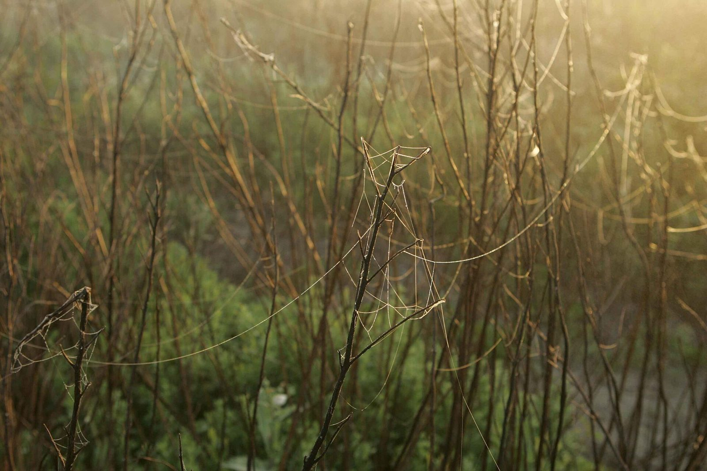
павутина
«Ми думали, що вночі природа засинає. А ми просто перестаємо її бачити»
Фото (Wikimedia Commons): Simone Bissi, CC BY-SA 4.0; Staszek99, CC BY-SA 4.0; Steve Hillebrand, USFWS, суспільне надбання
НІЧНИЙ МІКРОСВІТ.
За сценарієм — макрозйомка: крапля, гриб, павутина, поверхня листка, насіння. Якщо є власні макрофото/відео — покажіть їх; ці три фото — приклади з Wikimedia Commons.
Уночі й під ранок на холодних поверхнях утворюється роса — краплі на павутинні. Гриби ростуть і вночі.
Текст: «Ми думали, що вночі природа засинає. Але ми просто перестаємо її бачити».
24 HOURS
вода
рослина
листок
повітря
птах
екосистема
Ми прийшли досліджувати листок… а знайшли воду, повітря, світло і тварин
ФІНАЛ — «24 HOURS».
На екрані з’являється «24 HOURS». Усі дитячі дослідження з’єднуються: вода → рослина → листок → повітря → птах → екосистема.
Центральне дерево «оживає» (за можливості — проекція на дерево; діти чіпляють листки).
Діти по черзі:
«Ми прийшли досліджувати листок».
«А знайшли воду».
«Повітря».
«Світло».
«Тварин».
«І зрозуміли, що жоден із них не існує окремо».
ПРИРОДА НЕ ЖИВЕ ПО УРОКАХ.
УСЕ ПОВ’ЯЗАНО.
А що буде далі?
ФІНАЛЬНА ФРАЗА: «ПРИРОДА НЕ ЖИВЕ ПО УРОКАХ. УСЕ ПОВ’ЯЗАНО».
Пауза.
Дитина виходить із маленьким горщиком із насінням: «Ми досліджували одну осінню добу. А тепер хочемо перевірити, що буде далі».
Дітям можна роздати насіння для спільного шкільного довготривалого експерименту. Конференція продовжується після заходу.
Джерела фото, звуків і даних
Фото та відео дослідів — учасники конференції. Малюнки «доба», схеми і карти — створено для цієї презентації.
Погода: Open-Meteo (api.open-meteo.com), Одеса, отримано 19.10.2026 — архівні модельні дані та прогноз.
Фото (Wikimedia Commons): лелека — Andreas Trepte, CC BY-SA 2.5; ластівка, синиця — Charles J. Sharp, CC BY-SA 4.0; журавель — Andreas Trepte, CC BY-SA 2.5; роса — Kumar Rohan, CC BY-SA 4.0; конденсат — Mia Primavera, CC0; крапля на павутині — Simone Bissi, CC BY-SA 4.0; гриб — Staszek99, CC BY-SA 4.0; павутина — Steve Hillebrand, USFWS, суспільне надбання.
Звуки (Wikimedia Commons): дощ — ezwa (суспільне надбання) і Gravity Sound (CC BY 4.0); шелест, хрускіт листя, вітер — Gravity Sound, CC BY 4.0; вільшанка — Dan Stowell, CC BY-SA 4.0; синиця — Vladimir Arkhipov, CC BY-SA 3.0; журавель — Владислав Волков, CC0; лелека — felix.blume, CC BY-SA 3.0; ластівка — Jonathon Jongsma, CC BY-SA 3.0; сова — Alvaro Ortiz Troncoso, CC BY-SA 4.0.
Слайд для педагогів: усі сторонні матеріали мають вільні ліцензії; цей слайд виконує вимогу зазначати авторів. Дітям його показувати не обов’язково.
Усі слайди
← → пробіл — гортати · O — огляд · N — нотатки · Esc — закрити